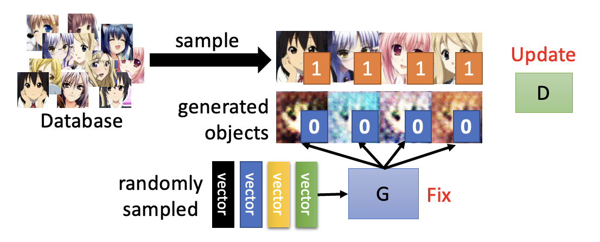
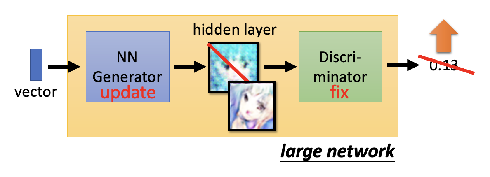
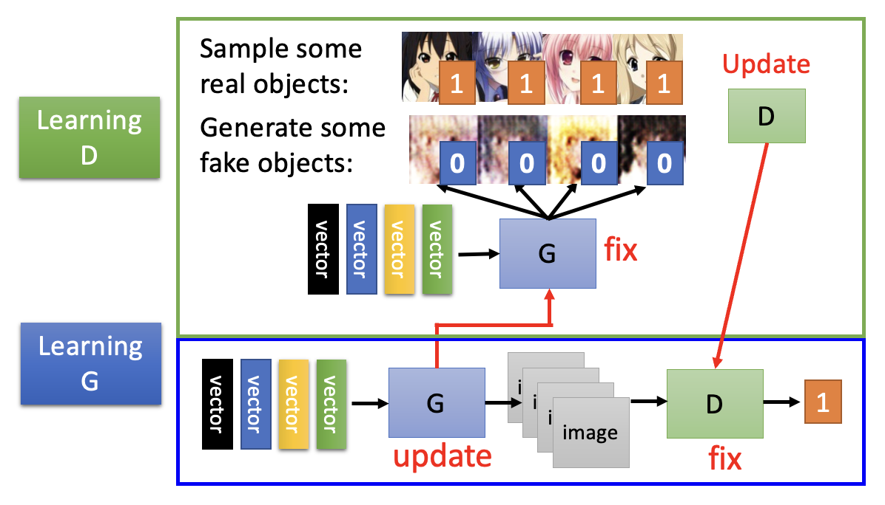
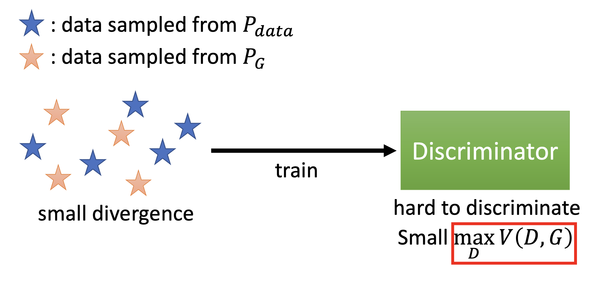
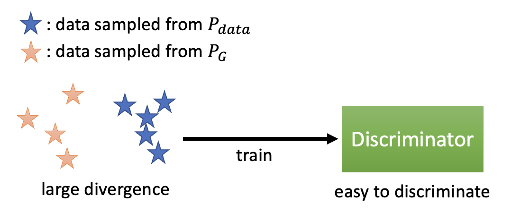
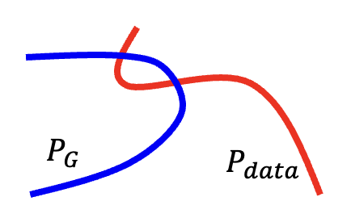
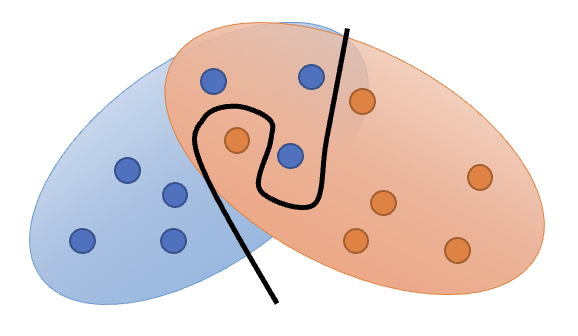
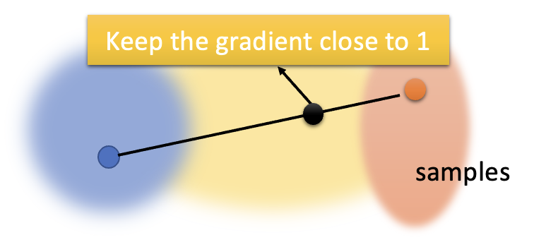

Generative Adversarial Network⚓︎
约 3087 个字 预计阅读时间 15 分钟
Basic Idea⚓︎
本讲将会介绍一种用于生成(generation) 任务的网络。相比一般的网络，它的一大特殊之处在于：网络除了接收常规输入 \(x\) 外，还会将一个简单的分布（即可以用分布函数 / 概率密度函数表示出来的分布）\(z\) 作为输入，因而得到的输出是一个更为复杂的分布 \(y\)，如下所示：
这样的网络我们一般称之为生成器(generator)，或者成为生成对抗网络(generative adversarial network, GAN)。
为什么要输入一个分布？
例子：视频预测
这是一段吃豆人游戏视频，我们希望搭建一个能够准确预测下一帧视频的模型。
按照以前介绍的方法，我们可能会搭建以下网络架构：
但用这样的网络训练得到的效果不尽人意：
- 吃豆人跑到一半变成了幽灵
- 影分身之术：尤其是到了岔路口的时候，吃豆人会变出一个分身，各自向不同方向移动
我们目前只关注后一个问题——这个问题出在：因为吃豆人在岔路口上方向的选择具有一定的随机性（即输出不是固定的
这个时候就需要用到一开始提到的带有分布的网络了！
一般来说，当任务需要一些“创造力”的时候，也就是说单个输入对应多个可能的输出时，我们需要将分布作为网络的一个输入，比如：
- 绘画
- 聊天机器人
- ...
各色各样的 GAN（The GAN Zoo
） （不过已经停更很久了 ...）
下面以二次元人像生成为例，介绍 GAN 的大致原理。不过为方便起见，我们将固定输入 \(x\) 暂时拿走（这成为无条件生成(unconditional generation)，对应有输入 \(x\) 的生成为条件生成 (conditional generation)
- 假定输入分布为正态分布（也可以是其他分布，但后面默认采用正态分布了
） ，其中某个输入 \(z\) 是从这个分布中采样出来的低维向量（维度可由我们自己决定） - 输出的二次元人像是一张图片，而图片可以看作一个非常高维的向量（介绍 CNN 的时候提到过这点）
接下来，我们将输出的图像丢给一个叫做判别器(discriminator) 的神经网络（可视作一个函数
关于生成器和判别器这两个神经网络之间的关系，我们可以从进化论的角度来看待：假如用蝴蝶代表生成器，用某种以蝴蝶为食的鸟（宝可梦的某个精灵，但我一向对这类游戏不太感冒，所以不太了解）代表判别器。
- 蝴蝶为了避免被鸟吃掉（对应判别器给生成器的输出打低分
） ，就会进化成棕色的蝴蝶，这样就能“骗过”鸟而幸存下来（对应判别器为新的生成器输出打高分） 。 - 但为了吃到蝴蝶，鸟也要进化下去，所以不久后它也能去吃棕色的蝴蝶了（对应的新的判别器为生成器输出打低分
） 。 - 蝴蝶通过进化出形如枯叶的翅膀，又一次骗过了这种鸟。
- 鸟又随之进化，这个进化的故事将会继续下去 ...
回到之前的二次元人像生成的任务，生成器和判别器就像上述这样不断地进化：生成器努力生成质量更高的图像，期望从判别器中得到高分；而判别器则会提出更高的要求，以低分鞭策生成器生成更好的图像。可以看到，随着不断的迭代升级，图像的质量越来越高，从模糊不清的马赛克逐渐发展到有鼻子有脸的人像。
生成器和判别器之间的关系看起来是“对抗的”，这也正是 GAN 中 A 的由来。
Algorithm⚓︎
- 首先初始化生成器和判别器
-
在每次训练迭代中
-
固定生成器 \(G\)，更新判别器 \(D\)：通过学习，判别器能够对真实对象打高分，而对生成对象打低分
- 真实对象的数据是从数据库中采样出来的，而生成对象就是现有生成器的输出结果（
一开始可能生成的就是一坨意义不明的东西） - 上图的 1 和 0 表明“对真实对象打高分，而对生成对象打低分”的原则
- 真实对象的数据是从数据库中采样出来的，而生成对象就是现有生成器的输出结果（
-
固定判别器 \(D\)，更新生成器 \(G\)：生成器要学会“骗过 (fool)”判别器
- 我们可以将生成器，中间生成的图像（可看作一个高维的隐藏层）和判别器看作一个很大的网络，目标就是让这个网络的输出值（标量）越大越好，从而达到骗过判别器的效果
将这 2 步放在一起的示意图如下所示：
 -
例子：多轮迭代的效果
其他例子
一个很有意思的工作，下面是其中一个 demo：
思考
这些图片中有哪些是真的，哪些是模型生成的？
都是生成出来的！
我们可以用 GAN 生成十分逼真但原本不存在的人脸，比如像下面这样，给出两张图片，模型会生成从一张图片到另一张图片的一系列变化（即做插值(interpolation) 操作
第一个的 GAN 的生成效果如下，可以看到并不理想：
而 BigGAN 已经能够取得很不错的效果了！
但也存在一些问题，比如生成这种现实世界不存在的物种：
Theory⚓︎
对于一般的网络，训练目标就是要最小化损失函数的值；而在 GAN 中，训练目标则是让模型生成的输出分布 \(P_G\) 和真实数据的分布 \(P_{data}\) 越接近越好。
方便起见，我们就讨论一维的情况（和上图是对应的
而这个接近程度可以用 \(Div(P_G, P_{data})\)，即两个分布的发散程度(divergence) 来量化，这个值越小表明两者越接近。因此目标可转化为寻找生成器 \(G^*\)，满足：
接下来的问题是：我们该如何计算这个发散程度呢？但好在对于 GAN 而言，我们只要能够从 \(P_G, P_{data}\) 中采样出一些数据来，无需知道它们的完整形式，就可以计算出发散程度了。
接下来就要依靠判别器来计算发散程度：对真实数据打高分，对生成数据打低分。
而判别器的训练目标是得到 \(D^* = \arg \max\limits_D V(D, G)\)。其中 \(V(D, G)\) 是被称为目标函数(objective function)，具体形式如下：
从这个式子可以看出，我们希望从 \(P_{data}\) 中采样得到的 \(y\) 对应的 \(D(y)\) 值越大越好，而从 \(P_G\) 中采样得到的 \(y\) 对应的 \(D(y)\) 值越小越好，这样 \(V(D, G)\) 的值就尽可能的大，满足判别器的训练目标。
目标函数的形式不必像上面那样。但之所以写成这个样子，是因为希望将判别器和二元分类器联系起来。
- 将 \(V(D, G)\) 看作交叉熵的相反数
- 将训练判别器当做训练一个二元分类器，将真实数据分作一类，将生成数据分作另一类，训练这个分类器就能完成判别器的优化了

另外，\(\max\limits_D V(D, G)\) 这个值和 JS 发散程度相关。下面从直观的角度来感受一下：
-
真实数据和生成数据接近，\(\max\limits_D V(D, G)\) 的值较小，即发散程度小，判别器难以区分二者
 -
真实数据和生成数据的分布较为发散，判别器区分比较容易

总结
其他发散程度的计算方法
值得一提的是，GAN 以训练困难著称（正所谓 "NO PAIN NO GAN"
Tips⚓︎
WGAN⚓︎
Problems of JS Divergence⚓︎
多数情况下，\(P_G, P_{data}\) 重叠的部分很少，这是因为
-
数据的本质：\(P_G, P_{data}\) 是高维空间的低维流形 (manifold)。它们的分布可以用二维平面上的两根线条表示，而线条之间重叠（即相交）的部分显然不会很多
 -
采样：即便两者有重叠，但如果采样个数不多的话，重叠的部分还是很少

再来看 JS 发散程度的问题：只要 \(P_G, P_{data}\) 不重叠，发散程度值恒等于 \(\log 2\)。也就是说无论两个分布有多接近，只要不重叠，就无法从 JS 发散程度值中看出来。
我们可以这样简单理解其中的原因：将判别器看作二元分类器；只要两个分布不重叠，分类器始终能够区分出这两个类，达到 100% 的精度（对应 JS 发散程度的定值 \(\log 2\)
Wasserstein Distance⚓︎
下面我们改用另一种衡量发散程度的方法，叫做沃瑟斯坦距离(Wasserstein distance)。为便于理解，我们先做一个比喻：将一个分布看作 \(P\) 现有的土堆，另一个分布 \(Q\) 看作目标形状的土堆，而这两个分布的发散程度就是推土机要将土堆移成目标形状的平均距离。
但即便是相同的 \(P\) 和 \(Q\)，中间过程也可以有所不同，左侧图和右侧图分别展示了两种方案，其中左边所需的距离更少。
其中能够得到最小平均距离的方案定义了沃瑟斯坦距离。
沃瑟斯坦距离能够准确反应不同的发散程度：

像这种应用沃瑟斯坦距离来训练的 GAN 叫做 WGAN。而沃瑟斯坦距离可通过求解以下式子得到：
要想满足上面的式子，需要遵循以下约束：
- \(P_{data}\) 对应的 \(D(y)\) 值越大越好，\(P_G\) 对应的 \(D(y)\) 值越小越好（和之前提过的一样）
- 函数 \(D\) 要足够平滑（对应上式 \(D \in 1\text{-Lipschitz}\)）
- 如果不满足该约束，那么训练出来的 \(D\) 永远也不会收敛
- 只有让 \(D\) 保持平滑，才能强迫 \(D(y)\) 介于 \(\infty\) 和 \(-\infty\) 之间
- 平滑的意思是，当 \(P_G, P_{data}\) 比较接近时，对应的 \(D(y)\) 值的变化不会很剧烈，不会出现 \(D(y)\) 值很大的情况；而当两者相距较远时，变化相对比较剧烈（否则就和 JS 发散程度一样没法区分两个分布的接近程度了）
那么怎么做到 \(D \in 1\text{-Lipschitz}\) 这一约束呢？下面给出了一些解决方案：
- 原始 WGAN -> 权重
- 强迫训练参数 \(w\) 介于 \(c\) 和 \(-c\) 之间
- 参数更新后，若 \(w > c\)，\(w = c\)；若 \(w < -c\)，\(w = -c\)
- 这个方法是比较粗糙的，不一定能够满足上述约束
-
改进 WGAN -> 梯度惩罚 (gradient penalty)
- 让真实数据分布（蓝圈）上某点和生成数据分布（红圈）上某点的连线上的采样点梯度保持在 1 附近
 -
谱归一化（对应 SNGAN
） ：让梯度范数在任何地方小于 1- 具体方法这里不介绍，感兴趣的话可以看这篇论文
评论区